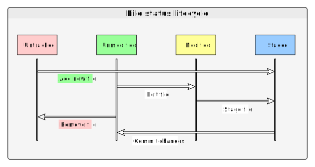
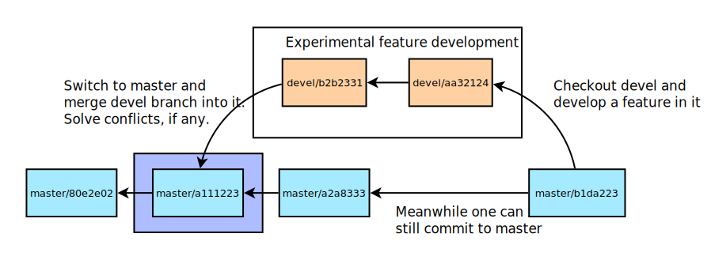

Git Help: A Concise Introduction with Live Examples
Aleksei Tepljakov
Head of Re:creation
XR Laboratory, Centre for Intelligent Systems
Department of Computer Systems, Tallinn University of
Technology, Estonia
Welcome to the interactive lecture which introduces you to one of the industry-standard tools for version control—Git!
To follow the lecture, navigate the slides either using arrows on your keyboard, or clicking the arrows in the bottom right corner of the screen.
Outline
- Prerequisites and setup
- Version control: motivation and background
- Git basics and the versioning process
- Committing changes, pushing and pulling
- Solving version conflicts
- About branches and merging
- Conclusions and what's next
Prerequisites and setup
Prerequisites
Required:
- Download and install Git from https://git-scm.com/
- Register an account at GitHub: https://github.com/
After registering your account at GitHub, please let your instructor know your account email so that the instructor could set you up with write access to a certain repository that we will be using in this interactive session.
Optional:
- https://sourcegear.com/diffmerge/ (you will need a merge tool)
- http://gitextensions.github.io/ (graphical user interface for Git)
How to use this interactive lecture
If you want to use the interactive lecture yourself:
- Download and install the latest LTS version of Node.js from https://nodejs.org/en/. When installing it, be sure to download and configure the build tools during the final step (there will be a checkbox asking whether you would like to do that).
- Download the repository with the lecture from GitHub: https://github.com/extall/githelp (first click the green button that says clone or download, then choose download ZIP)
- In the directory that contains the file
server.jsrunnpm installand thennpm startin your terminal. Openlocalhost:8000in your browser.
Sometimes the terminals won't appear. Then try to refresh the page with F5.
Version control:
motivation and background
Perhaps you are familiar with this situation...

... or maybe this one?
Why this is not coherent
- Which version is which?
- Creates a mess in the file system and in your head.
- Even though contemporary cloud storage services keep a history of file changes, no automatic system can ever be completely reliable.
- (Also, almost no one should use MS Word for professional writing, but that is a different story.)
SOLUTION: use Version Control
- Offers a complete solution for managing file changes over time.
- All file types are supported; can handle documents and complex coding projects alike.
- Almost any change is completely reversible.
- Makes possible efficient collaboration on projects.
- Can work as a backup solution, too.
Centralized version control
- One central repository.
- All users commit changes to the central repository.
- Each user has a working copy. The repository gets updated when they commit.
- Examples: Subversion (SVN), CVS, Helix Core (Perforce).

Decentralized version control
- Multiple clones of a repository.
- All users commit changes to a private repository.
- All changes remain local until pushed to another repository.
- No external changes are visible unless pulled from elsewhere.
- An example of a decentralized version control system is...

Git
Git facts
- Git was created by Linus Torvalds in 2005.
- It was designed to do version control on Linux kernel.
- It is free, open source software.
- Goals of Git are speed, support for nonlinear development, and ability to handle large projects efficiently.
“Hello, my name is Linus Torvalds and I pronounce svn as git.” (not an actual quote)
Subversion versus Git
Subversion tracks version data on each individual file.
Git, on the other hand, keeps “snapshots” of the entire state of the project:
- Each checkin version of the code has a copy of each file in it.
- Some files change on the given checkin, some do not.
- For files that do not change, Git does not store them again, the new snapshot just contains links to previous files.
- This redundant mechanism improves the speed of operation.
Subversion timeline
Git timeline

Let's get our feet wet!
Identity: who is going to commit?
After firing up the terminal (or Git bash on Windows), assuming this is your first “Git session”, you need to provide Git your identity. Otherwise, you will not be allowed to commit.
To do this, run the following two lines in the terminal replacing relevant parts with your details:
git config --global user.name "Your Name"
git config --global user.email "example@example.com"To use a separate identity in each project, just omit the --global option
when your current directory is inside the relevant repository.
You can also check your identity by omitting the strings at the end.
Git: Set up the identity
How to set up a repository
You have two options to set up a Git repository:
- Set up an empty repository. In the terminal,
cdto a folder and type:git init - Clone an existing repository. The command
git clone URLwill accomplish that, whereURLpoints to the location of the repository.
We will clone a specific public repository to mess around with usinggit clone https://github.com/extall/helpgit.git
Git: Clone a repository
Congratulations!
If everything completed successfully, then you have just cloned your first Git repository.
Now cd into its folder and type
git statusto check the status of the working tree.
Before proceeding, we now need to learn a few things about Git terminology and the way Git versioning process works.
Git terminology
| Term | Meaning |
|---|---|
| index | staging area (located in .git/index) |
| content | git tracks what is in a file, not the file itself |
| tree | git's representation of a file system |
| working tree | tree representing what is currently checked out |
| staged | ready to be committed |
| commit | a set of database entries (snapshot of the working tree) |
| ref | pointer to a commit object |
| branch | just a (special) ref; semantically represents a line of dev |
| HEAD | a ref pointing to the working tree |
Local and remote operations
In your local copy, files can be
- in your local repo (committed), or
- checked out and modified (working copy), or
- staged for commit (in staging area).
Commit history with all the version changes can be pushed to, or pulled from the remote.
The difference between fetch and pull is that the latter
automatically merges remote changes with local repo which then immediately end up in your working
directory.
Local and remote operations: illustration
Basic workflow
The basic workflow then working on a project with Git is:
- Add files you want tracked by Git;
- Modify files in your working directory;
- Stage files which you want to commit;
- Commit changes, i.e., create a new snapshot of your repo;
- Push the changes to remote (assuming existence of the corresponding access rights).
File status lifecycle illustrated
Alright, let's play with some files!
Git create and/or modify a file
Let us create a folder, and in it a file. We then add the file to the repository and
commit. Run the following code (Windows) replacing YEAR, MONTH, and DAY if needed (if you are just viewing index.html):
md pg_YEAR_MONTH_DAY
cd pg_YEAR_MONTH_DAY
echo Hello, World! > new_file.txtNow type git status. What do you see? Now add/stage the file with
git add new_file.txtGit: Create a new file, stage it, and commit it!
Committing a file to the local repository
Type git status again. The file should be staged for commit. So we are now ready to commit our file to the local repo. To do this:
git commit -m "A new file has been added."Note the -m switch and the text in quotation marks that follows. This is known as the commit message:
- You are not allowed to commit your changes without it.
- This makes it easier for your collaborators to understand the changes.
- Keep commit messages clear and concise!
Pushing the file to the origin
The origin is what in case of Git plays the role of a central repository (think GitHub.com or BitBucket.org). After committing your work to the local repo you often want to update the origin as well.
Therefore, if you have been assigned as collaborator to the helpgit repository, you can now do
git pushYour changes are then synchronized with the origin and others can pull them from it using, e.g., shorthand for git fetch and git merge:
git pullIssues after pull? Whodunit? Read the log!
In order to see the commit log, use the following command:
git logTo see only N last commits, use the -n N switch. For example, to see the last three commits, use
git log -n 3Undoing and reverting changes
To undo changes on a file before committing:
git reset HEAD -- filename
git checkout -- filenameTo undo the last commit (keeping changes in index):
git reset --soft HEAD~1To undo the last commit destroying the changes:
git reset --hard HEAD~1More Git basics
By this time you should have learned the most simple Git workflow. Here are some useful bits of information.
- You can add files faster using wildcards. For example, to add all files use
git add *and to add all text filesgit add *.txt - The repo folder can be freely moved around the filesystem.
- The repo root contains a hidden
.gitfolder. DON'T TOUCH IT. - Git does not track empty folders, so all such folders are ignored.
- To track a folder, you can put an empty file inside itf.
- Git keeps track of everything by managing SHA-1 hashes.
- You can access various commits using
git checkout HASH.
Creating a merge conflict
Let us now create a merge conflict. This requires a more advanced setup, so bear with me. Go to the repo's parent folder and run the following command:
git clone https://github.com/extall/helpgit.git helpgit1If you've followed previous instructions, you should now have to folders side by side: helpgit and helpgit1. We will make it so that the latter one will be able to pull changes from the former one (both are local!). To do this, cd into helpgit1 and type
git remote add local ../helpgitNow you can use git pull local to pull from helpgit to helpgit1!
Git: Create a merge conflict
Creating the same (but slightly different) file
The task now is a bit tedious. But please follow the instructions exactly.
Create a file with the same name in both repos (but different content)—
In helpgit (don't forget to replace YEAR, MONTH, and DATE if needed):
echo Hello, World! > test_YEAR_MONTH_DAY.txtIn helpgit1 (replace the date info here too, of course):
echo Hello World! > test_YEAR_MONTH_DAY.txtIn both repos, run
git add *
git commit -m "Added new file"Trying to pull from the local repo
Now, cd to helpgit1 and attempt to pull from helpgit into the currently checked out master branch (we will discuss branches later):
git pull local masterAs a result, you should see something like this:
CONFLICT (add/add): Merge conflict in test_YEAR_MONTH_DAY.txt
Auto-merging test_YEAR_MONTH_DAY.txt
Automatic merge failed; fix conflicts and then commit the result.Congratulations on receiving your first ever merge conflict! Let's fix it now.
See the conflict
To see what constitutes the conflict, see how the text file looks now:
more test_YEAR_MONTH_DAY.txtWhat you should see is something like this (hash may be different):
<<<<<<< HEAD
Hello World!
=======
Hello, World!
>>>>>>> dc2c23318eaea06625a28c94bf418daf80c35cddThe first ‘hello world’ line is what we have, the second one is what ‘they’ have.
Git: Resolve the conflict
Fix the conflict
To fix the conflict, we could just replace the contents of the file, since it only has one line. We'll keep the orthographically correct version:
echo Hello, World! > test_YEAR_MONTH_DAY.txtIn general, you want to eliminate the lines with conflict markers <<<<<<<, =======, and >>>>>>>, while choosing the content line you want to keep. You need to do this for every conflict in the file.
After the conflicts are resolved, you need to create a merge commit. So stage the file using git add and commit it with git commit -m "Message".
After every operation, check git status to see how it all sits together.
Final notes on this example
Perhaps now after the conflict is solved (masterfully done, by the way!) you want to push the changes to the local repo with
git push localThis, however, will FAIL. Why? Well, to understand this, we should also discuss the final topic of this concise introduction which is branches.
You see, right now in both repositories, you have the master branch checked out. If you push changes now, it can potentially create a mess. That's exactly what Git is telling you.
However, you CAN push to the origin instead, assuming you have been provided collaborator access rights there.
Git Branches
One of the most important features of Git is the branching model that supports at-scale nonlinear development. What this means is that any commit object (remember, it is a file system snapshot) can have a separate branch in which the development of certain features is carried out.
It is advised for any repo to have at least two branches:
- The default is
masterwhere stable code, or stable content, is stored. - Additionally,
develbranch where one cad develop experimental content.
Of course, many additional branches can be created, such as release for releases, bugfix for fixing bugs found in master, etc.
You will be OK with only having one branch if you are the only user of the repo.
Typical branching model example
Depicted above is a typical example of using the branch model. The master branch is used to host only stable, tested code, while the devel branch is used to implement and test experimental features. Once the feature has been thoroughly tested, it is merged into the master branch.
Creating and checking out branches
To learn about using branches and merging them proceed like this:
- Go to
helpgit1repository. - Check the contents of the
test_YEAR_MONTH_DAY.txtfile. Change the contents, but do not commit the changes. - Now, type
git branch devel. You have just created a new branch! - Before you can commit to it, do
git checkout devel. - Now the contents of your working directory are that of the
develbranch which at the moments is just a copy of latestmaster. - Stage and commit the updated text file to
devel. - Do
git checkout master. Do you remember the previous contents of the file? Check them usingmore test_YEAR_MONTH_DAY.txt - While in
master, you can merge another branch into it. - Type
git merge develand check the contents of the file again.
Git: Working with branches*
*Also known as the sixth and final terminal.
Tracking branches
By default, Git will allow branches with the same name to coexist completely independently in two interacting repositories. However, in case of copy/origin transactions, this is suboptimal. So in order to ensure proper synchronization between the two, one must turn to tracking references.
So, to track a branch devel on the origin:
git checkout --track origin/develAnd, conversly, to add a tracking reference on the origin to a given local branch, say, featurex, one could say:
git push -u origin featurexTwo-way merge
It is important to remember that when switching to a different branch, say devel, which is behind the master branch, you need to merge the master branch into it, to make use of the latest updates in master, i.e., you need to synchronize those branches. But only if this is your way of working with Git.
So the typical sequence of operations is
- From
develbranch switch tomasterand merge. - Maybe do some work on
masterdirectly, or merge other branches into it. - Coming back to
develbranch, mergemasterinto it and continue developing on it.
You are good at following instructions!
Now, click “right” to go to the last slides...
Didn't I tell you to go to the last slides?
Oh well... You get another terminal as your reward. Enjoy!
That's all for now
Git is a pretty powerful versioning tool. It would be insane to cover all of its ins and outs in a concise introduction. Thus, we stop here.
Well, almost...
What to read about next
- Navigating the Git branch and tagging commits;
- Checking out or cherry picking commits;
- Stashing and merging stashes;
- Using “central” “origin” servers like GitHub.com;
- Submodules (repositories within repositories);
- Using graphical user interfaces like Git-Extensions;
- What
git rebasedoes; - Why as a beginner you should not
git rebase; - About
git clean,git revert, andgit rm.
Oh, nearly forgot
To learn about git commands, use git help command
Homework
Assuming you have contributor-level access to the original helpgit repo on GitHub:
— Play around with the local helpgit1 repo. You can do whatever you want, just please don't push it to the origin afterwards.
— In the local helpgit repo, amend the README.md file adding your (nick)name to the Roll of Honor. Please don't delete anyone else. Then push to origin.
Acknowledgements
This interactive presentation is based on
- The materials from the Software Engineering course read in University of Washington by René Just
- The official Git Book.
The development of this presentation was partially supported by a teaching grant awarded to Aleksei Tepljakov in 2019.